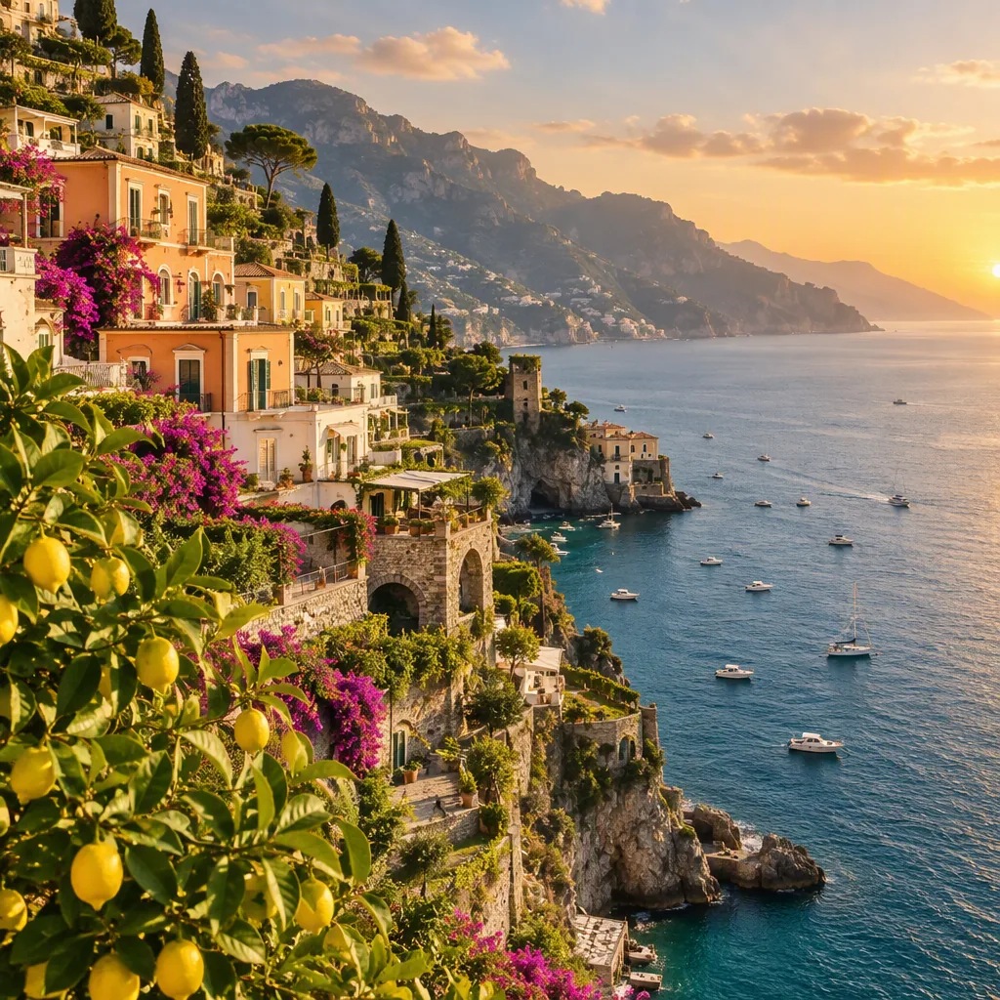
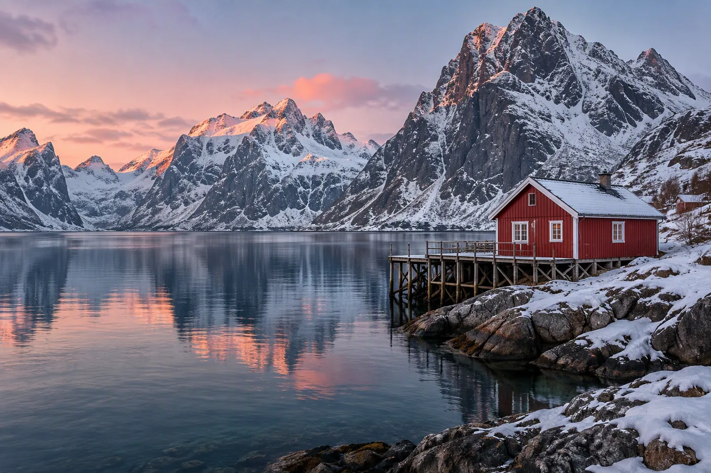

8 days · Spring
Kyoto, slowly
Temple mornings, a knife workshop, and dinner in a house that has fed the same street for four generations.
From ₹1,86,000
View journey
Curated journeys · 38 countries
Small groups, quiet hotels and long, unhurried days. We plan the logistics; you keep the hours you will remember.
Where we go
Each journey is capped at fourteen guests and built around one idea: fewer places, more time in each one.
8 days · Spring
Temple mornings, a knife workshop, and dinner in a house that has fed the same street for four generations.

7 days · Late summer
Lemon groves, a boat with no schedule, and the coast when the day-trippers have finally gone home.

6 days · Winter light
Fishermen's cabins, a hot tub under the aurora, and roads that belong to almost no one in January.
The route · Dolomites
No two mornings look the same. The route is fixed, the details are not — your guide reads the weather and the group, then chooses the better path.
Day 1 · Arrive
Land in Venice, drive north, and arrive at the lake as the last light turns the water green. Dinner is at the refuge; nobody is rushing you.
Day 2 · Walk
A gentle loop above the lake, a packed lunch in a meadow, and an afternoon with nowhere to be. The guide carries the coffee.
Day 3 · Climb
A cable car takes the height; your legs take the last hour. Tonight is above the treeline, with a sky that makes the phone feel pointless.
Day 4 · Rest
The only fixed item is dinner. Read, sleep, walk to the next valley, or sit with the same coffee for two hours — the group splits naturally.
Journal · Entry 04
“The point was never to see more. It was to notice more.”Amalfi Coast · May, 06:40
Next step
A twenty-minute call, no brochure and no pressure. If we are not the right fit, we will say so and point you somewhere better.
The travel desk
Monday – Friday
10:00 – 18:00 IST
Replies within one working day. Your details stay with the two people who plan your trip.